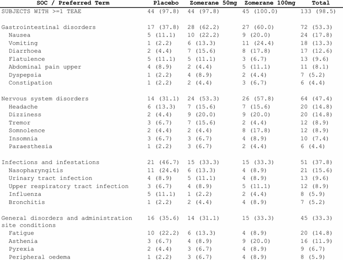
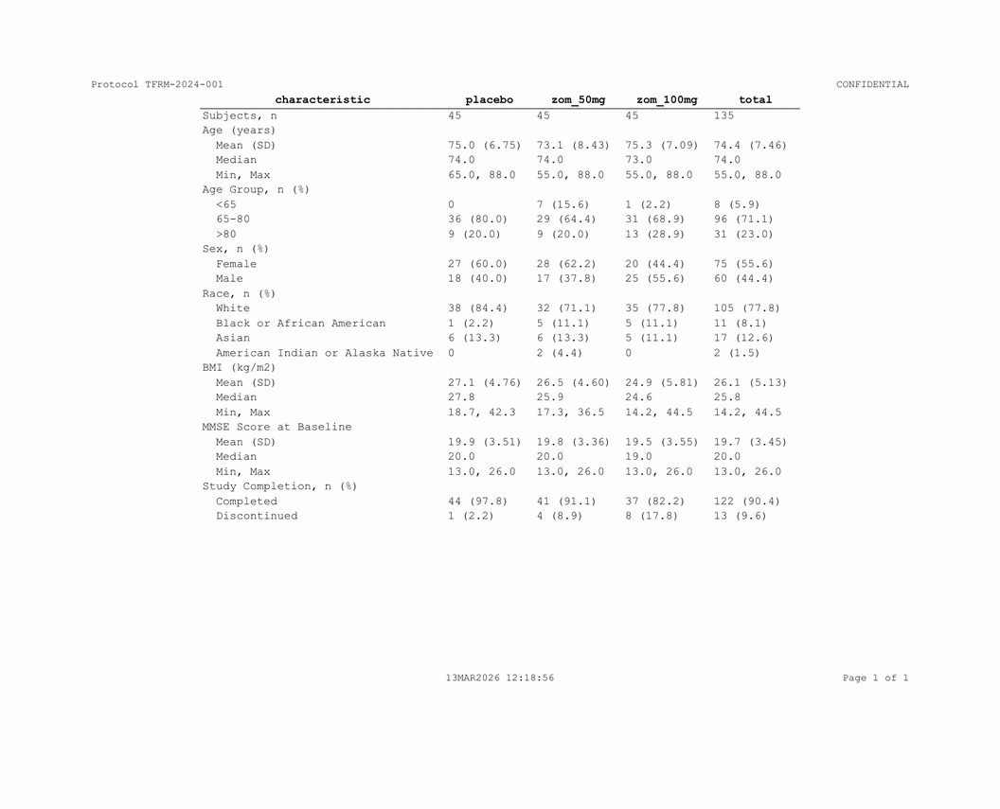

fr_rows() controls how data flows across pages.
fr_page(), fr_pagehead(), and
fr_pagefoot() control the physical page.
page_by: separate pages per parameter
vs_wk24 <- tbl_vs[tbl_vs$timepoint == "Week 24",
c("param", "statistic", "placebo_value",
"zom_50mg_value", "zom_100mg_value")]
spec <- vs_wk24 |>
fr_table() |>
fr_cols(param = fr_col(visible = FALSE)) |>
fr_rows(page_by = "param", page_by_bold = TRUE)Each unique value of param gets its own page section.
The label appears as a bold header above each section.
SAS:
BY param;in PROC REPORT with#BYVALin titles.
group_by and blank_after
spec <- tbl_demog |>
fr_table() |>
fr_cols(group = fr_col(visible = FALSE)) |>
fr_rows(group_by = "group", blank_after = "group")group_by keeps groups together during pagination.
blank_after inserts an empty row after each group.
Note: group_by auto-implies
blank_after on the same column, so you usually only need
group_by:
indent_by: SOC/PT hierarchies
spec <- tbl_ae_soc |>
fr_table() |>
fr_cols(
soc = fr_col(visible = FALSE),
pt = fr_col("SOC / Preferred Term", width = 3.0),
row_type = fr_col(visible = FALSE)
) |>
fr_rows(group_by = "soc", indent_by = "pt")
SOC/PT hierarchy with indentation
indent_by indents the named column’s values by 2
characters beneath the group header. SOC terms appear flush-left; PTs
are indented.
Multi-level indent
For deeper hierarchies (SOC / HLT / PT), pass a named list with a key column that determines indent level per row:
ae_hierarchy <- data.frame(
soc = rep("Gastrointestinal disorders", 5),
term = c("Gastrointestinal disorders", "GI signs and symptoms",
"Nausea", "Vomiting", "Diarrhoea"),
row_type = c("soc", "hlt", "pt", "pt", "pt"),
total = c("72 (53.3)", "54 (40.0)", "24 (17.8)", "18 (13.3)", "12 (8.9)"),
stringsAsFactors = FALSE
)
spec <- ae_hierarchy |>
fr_table() |>
fr_cols(
soc = fr_col(visible = FALSE),
row_type = fr_col(visible = FALSE),
term = fr_col("SOC / HLT / Preferred Term", width = 3.5),
total = fr_col("Total\nn (%)")
) |>
fr_rows(
group_by = "soc",
indent_by = list(
key = "row_type",
col = "term",
levels = c(soc = 0, hlt = 1, pt = 2)
)
)Each level adds 2 space-character widths (~0.17 in at 9pt). SOC rows get 0 indent, HLT rows get 1 level, PT rows get 2 levels.
group_label: auto-inject group headers
When group names and display values live in separate
columns (e.g., demographics where "Sex" is the
group and "Male" / "Female" are the
statistics), group_label auto-injects the group value as a
header row in the target display column:
demog_long <- data.frame(
variable = c("Sex", "Sex", "Age (years)", "Age (years)", "Age (years)"),
stat = c("Female", "Male", "Mean (SD)", "Median", "Min, Max"),
value = c("27 (60.0)", "18 (40.0)", "75.0 (6.8)", "74.0", "65, 88"),
stringsAsFactors = FALSE
)
spec <- demog_long |>
fr_table() |>
fr_cols(variable = fr_col(visible = FALSE)) |>
fr_rows(
group_by = "variable",
group_label = "stat",
indent_by = "stat"
)This inserts "Sex" and "Age (years)" as
header rows in the stat column at each group boundary.
Detail rows ("Female", "Male", etc.) are
indented underneath. Style the injected headers via
fr_styles() if you want bold or background color.
group_keep: visual-only grouping
By default, group_by keeps groups together on the same
page. Set group_keep = FALSE for visual-only grouping
(blank-after spacing, indent) without page-keeping — useful for long
groups where you want the renderer to break freely:
wrap: text wrapping in body cells
For listings with long text fields, set wrap = TRUE to
enable text wrapping in body cells. Without wrapping, long values
overflow the cell boundary; with it, the cell grows vertically to
fit:
wrap pairs naturally with repeat_cols on
listings where the first column (e.g., subject ID) should appear only
once per block:
page_by_visible: hidden page breaks
Set page_by_visible = FALSE to get page breaks at group
boundaries without a visible label above the headers:
Combining row features
spec <- tbl_ae_soc |>
fr_table() |>
fr_cols(
soc = fr_col(visible = FALSE),
pt = fr_col("SOC / PT", width = 3.0),
row_type = fr_col(visible = FALSE),
placebo = fr_col("Placebo"),
zom_50mg = fr_col("Zomerane 50mg"),
zom_100mg = fr_col("Zomerane 100mg"),
total = fr_col("Total")
) |>
fr_rows(group_by = "soc", indent_by = "pt")
sort_by and repeat_cols
For listings, sort_by controls row order and
repeat_cols suppresses repeated values:
ae_list <- adae[1:20, c("USUBJID", "ARM", "AEDECOD", "AESEV")]
spec <- ae_list |>
fr_listing() |>
fr_rows(sort_by = c("ARM", "USUBJID"),
repeat_cols = "ARM")repeat_cols only prints the value when it changes (like
NOREPEAT in SAS).
Page configuration
spec <- tbl_demog |>
fr_table() |>
fr_page(
orientation = "landscape",
paper = "letter",
font_family = "Courier New",
font_size = 9,
margins = c(top = 1.0, right = 0.75, bottom = 1.0, left = 0.75)
)
pg <- fr_get_page(spec)
pg$orientation
#> [1] "landscape"These are the package defaults — you only need fr_page()
when overriding.
Orphan and widow control
orphan_min and widow_min prevent isolated
rows at page boundaries. orphan_min (default
3L) is the minimum number of body rows that must remain at
the bottom of a page before a group; if fewer would remain, the entire
group moves to the next page. widow_min (default
3L) is the minimum number of rows that must carry over to
the top of the next page:
spec <- tbl_ae_soc |>
fr_table() |>
fr_rows(group_by = "soc") |>
fr_page(orphan_min = 2L, widow_min = 2L)Set either to 1L to disable the corresponding control.
These settings only take effect when group_by is
active.
Custom fonts for PDF: Set
TLFRAME_FONT_DIRto a directory of.ttf/.otffiles and XeLaTeX discovers them by name — no system-wide installation needed. Seevignette("automation")for Docker/CI examples.
Running headers and footers
spec <- tbl_demog |>
fr_table() |>
fr_pagehead(
left = "Protocol TFRM-2024-001",
right = "CONFIDENTIAL"
) |>
fr_pagefoot(
left = "{program}",
center = "{datetime}",
right = "Page {thepage} of {total_pages}"
)
Running headers and footers with protocol ID and page numbers
Built-in tokens
| Token | Value |
|---|---|
{thepage} |
Current page number |
{total_pages} |
Total page count |
{program} |
Source file name |
{datetime} |
Render timestamp |
Custom tokens
spec <- tbl_demog |>
fr_table() |>
fr_page(tokens = list(study = "TFRM-2024-001", cutoff = "15MAR2025")) |>
fr_pagefoot(left = "Study: {study}", right = "Cutoff: {cutoff}")SAS:
TITLE j=l "Protocol..." j=r "CONFIDENTIAL";andFOOTNOTE j=l "&_SASPROGRAMFILE" j=r "Page ^{thispage} of ^{lastpage}";
ICH E3 compliance mapping
| ICH E3 Requirement | tlframe Feature |
|---|---|
| Study ID on every page | fr_pagehead(left = "Study TFRM-2024-001") |
| Table number and title | fr_titles("Table 14.1.1", "Demographics...") |
| Population label | Third title line |
| Treatment arm N-counts | fr_cols(.n = ..., .n_format = ...) |
| Page numbering | fr_pagefoot(right = "Page {thepage} of {total_pages}") |
| Program name | fr_pagefoot(left = "{program}") |
| Continuation label | fr_page(continuation = "(continued)") |
| Footnotes/abbreviations | fr_footnotes(...) |
Section spacing
fr_spacing() controls blank lines between structural
sections:
spec <- tbl_demog |>
fr_table() |>
fr_spacing(
titles_after = 1,
footnotes_before = 1,
pagehead_after = 0,
pagefoot_before = 0,
page_by_after = 1
)